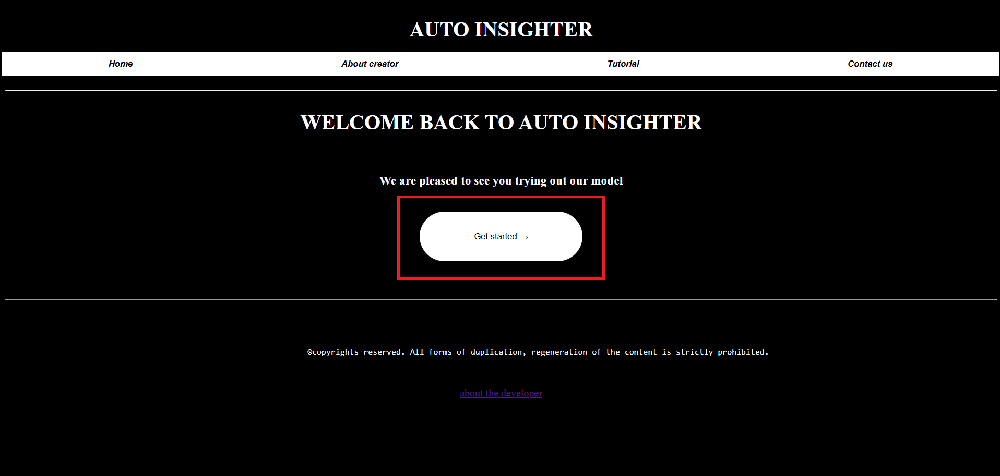
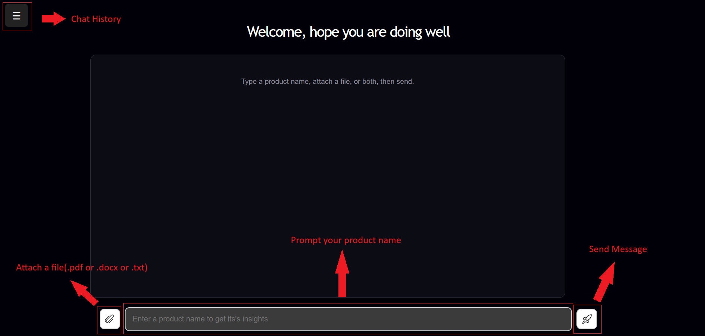

TUTORIAL
This web application is called ProdInsight. It is an Agentic AI Based application that is capable of summarizing any product and giving its pros and cons. It uses web scraping to filter out reviews and comments about an entered product from prominent sources like reddit and gives them. Below is how you would proceed to use the application
Step 1: Get to the Home Page icon and click on get started button

Step 2: You will see this interface as below. Now you you just have to prompt like a chatbot where you would have the options of attaching a file (only .pdf, .docx and .txt files can be attached), click on the rocket icon to send the message. You can send without a file, or send a file only, or do the both too. You can view your chat histories from the top left icon
